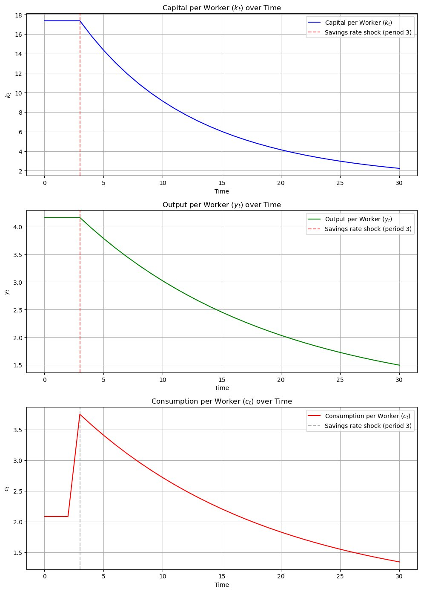
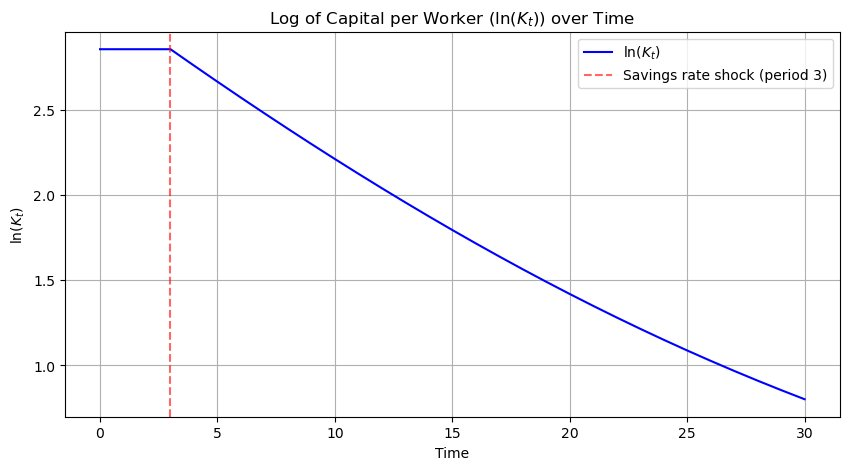
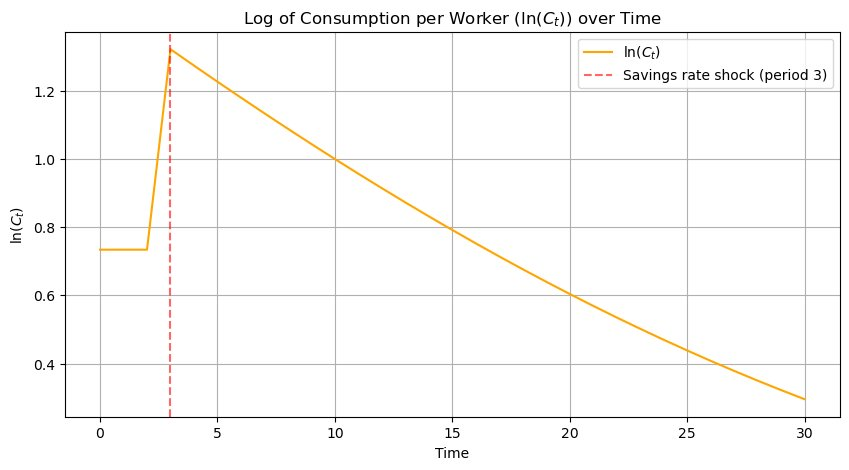

The Solow growth model: simulating a savings-rate shock
The question
What happens to capital, output, and consumption per worker when an economy suddenly saves much less?
- Model and parameters
- Steady state: 17.36 capital per worker
- Savings rate falls from 50% to 10%
- 30-period simulation
- Time paths and interpretation
What I did
- Set up the model: a discrete-time Solow model with a Cobb-Douglas production function written in per-worker terms, constant population growth, and no technological change.
- Calibrated the parameters: productivity of 1, five initial workers, capital share of 0.5, depreciation of 7%, population growth of 5%, and a 50% savings rate.
- Computed the steady state with the closed-form solution and wrote functions for the initial capital, output, and consumption values.
- Introduced a savings-rate shock: at period 3 the savings rate falls from 50% to 10%. I checked the law of motion by computing the first few periods by hand.
- Simulated 30 periods and plotted capital, output, and consumption per worker, plus log versions to show the transition clearly.
- Interpreted the results in economic terms, including what the trade-off means for a developing economy like the one I worked in as a banker.
Results
- The steady state at a 50% savings rate is 17.36 units of capital per worker. Initial aggregate capital is 86.81, output is 20.83, and consumption per worker is 2.08.
- Capital stays at 17.36 until the shock, then falls to 15.77 in the first period after it.
- Consumption per worker jumps from 2.08 to about 3.75 when households stop saving, because output has not yet changed.
- That boom does not last. By period 30, capital per worker has fallen to about 2.2, output per worker to about 1.5, and consumption per worker to about 1.3, which is below where it started.
The core lesson is the savings-consumption trade-off: saving less gives a short-run consumption boost but permanently lowers long-run living standards, which matters for savings policy in developing economies.



Tools
- Python
- NumPy
- pandas
- Matplotlib
- Jupyter
Skills shown
- Economic modeling
- Numerical simulation
- Model calibration
- Writing reusable functions
- Data visualization
- Explaining results in plain language
Code preview
Steady state and the law of motion
def steady_state_capital(sigma, A0, delta, n, theta):
"""Compute the steady state capital per worker."""
return ((sigma * A0) / (n + delta))**(1 / (1 - theta))
def next_k(k_t, sigma, A0, theta, delta, n):
"""Compute next period capital per worker using the law of motion."""
return ((1 - delta) * k_t + sigma * A0 * k_t**theta) / (1 + n)Simulating 30 periods with the savings-rate shock
for t in range(T):
# Apply savings rate shock from period 3 onward
sigma_t = sigma_new if t >= 3 else sigma_initial
y_t[t] = A0 * k_t[t]**theta
c_t[t] = (1 - sigma_t) * y_t[t]
k_t[t+1] = ((1 - delta) * k_t[t] + sigma_t * A0 * k_t[t]**theta) / (1 + n)Excerpts from the original file, reformatted for readability. View the full notebook on GitHub.